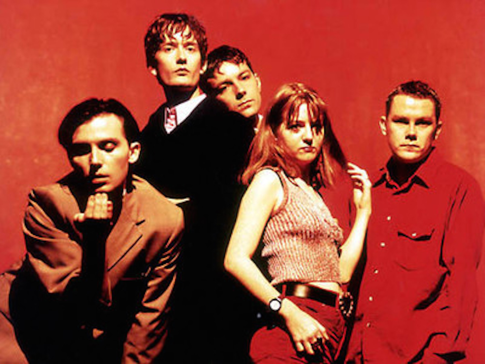

Pulp
Years Active: 1978–2002, 2011–2013, 2022–present
Genre/s: Britpop, art rock, indie pop, post-punk, indie rock, alternative rock
Label/s: Rough Trade, Red Rhino, Fire, Island
Members: Jarvis Cocker, Candida Doyle, Nick Banks, Mark Webber
Pulp are an English rock band formed in Sheffield in 1978. At their critical and commercial peak, the band consisted of Jarvis Cocker (vocals, guitar, keyboards), Russell Senior (guitar, violin), Candida Doyle (keyboards), Nick Banks (drums, percussion), Steve Mackey (bass) and Mark Webber (guitar, keyboards). The band's "kitchen sink drama" lyrics, coupled with its references to British culture, led to Cocker and Pulp becoming reluctant figureheads of the Britpop movement.
The band struggled to find success during the 1980s, but gained UK prominence in the mid-1990s first with His 'n' Hers (1994), which was nominated for the Mercury Music Prize. Its follow-up, Different Class (1995), won the Mercury Prize, reached number one on the UK Albums Chart and spawned four top ten singles, including the number two hits "Common People" and "Mis-Shapes/Sorted for E's & Wizz". The band's sixth album, This Is Hardcore (1998), also debuted at number one in the UK and was nominated for the Mercury Prize. At their peak, Pulp headlined the Pyramid Stage of the Glastonbury Festival twice and were regarded among the Britpop "big four", along with Blur, Oasis and Suede.
The band released We Love Life in 2001 and then took a decade-long break, having sold more than 10 million records. Pulp reunited in 2011 to play multiple festivals and released "After You" in 2013, their first song in 12 years. The band reunited a second time in 2022 to tour once again, and later released their eighth album More in June 2025. More was released to "universal acclaim" and commercial success, becoming Pulp's first No.1 album since This Is Hardcore. They headlined Glastonbury in 2025, returning to the Pyramid Stage as a surprise act to critical acclaim.